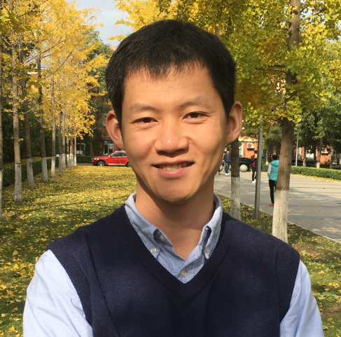

|
 |
Shigang Li (李士刚)
Postdoctoral Researcher, SPCL Lab, ETH Zurich
Links: [Google Scholar] [ResearchGate] [LinkedIn] [GitHub]
Research interests: Parallel Computing, High Performance Deep Learning Systems, GPU, MPI, Heterogeneous Computing
For any questions: shigangli.cs@gmail.com; shigang.li@inf.ethz.ch
|